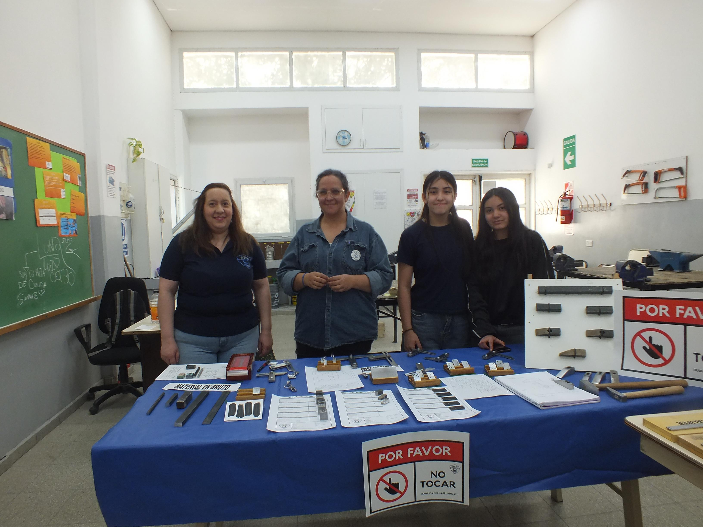
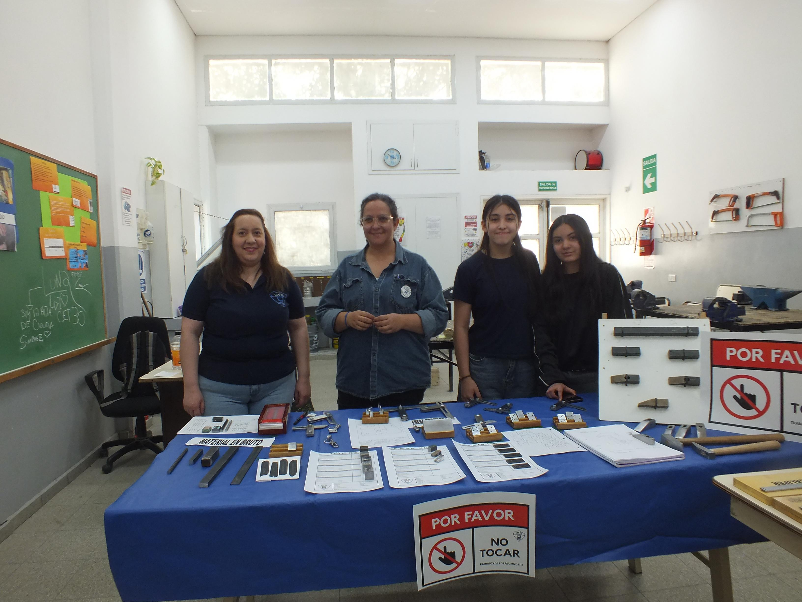

¿POR QUÉ SON IMPORTANTES LOS TALLERES DE PROGRAMACION?
Los talleres de programación son una herramienta fundamental para preparar a los estudiantes frente a los desafíos del mundo actual, donde la tecnología y la informática ocupan un papel central. A través de estos espacios, los alumnos no solo aprenden a escribir código, sino que desarrollan el pensamiento lógico, la creatividad y la capacidad para resolver problemas de manera eficiente.
Estos talleres permiten que los estudiantes aprendan haciendo, aplicando los conocimientos teóricos en proyectos prácticos como la creación de programas, páginas web o aplicaciones. De esta forma, adquieren habilidades técnicas concretas que les brindan mayores oportunidades en el ámbito laboral y los preparan para continuar su formación en carreras relacionadas con la informática y la ingeniería.
Además, los talleres de programación fomentan el trabajo en equipo, la comunicación y la colaboración, ya que muchos proyectos requieren el aporte de varios compañeros para llegar a una solución efectiva. También promueven valores como la perseverancia y la atención al detalle, cualidades esenciales en el desarrollo de software.
En conclusión, los talleres de programación son esenciales porque conectan la teoría con la práctica, fortalecen las competencias digitales de los estudiantes y los preparan para un futuro profesional en el que la tecnología seguirá siendo un pilar del progreso y la innovación.

 
